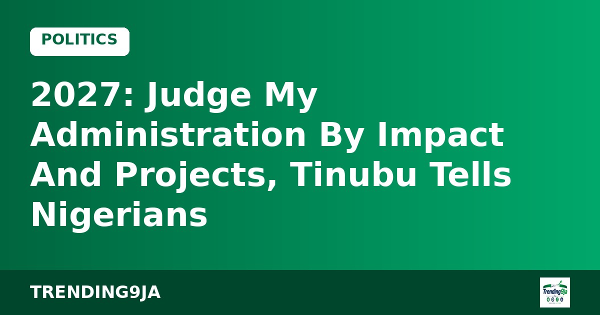
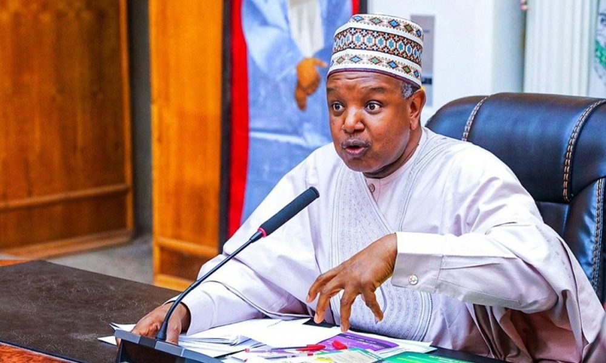

KC Ohaebosim Becomes First Nigerian-American Elected US Lieutenant Governor
KC Ohaebosim has been elected Lieutenant Governor of Kansas, becoming the first Nigerian-American to attain the executive role in the United States.

Former Vice President Atiku Abubakar carried out an extensive campaign tour across Bauchi State over the weekend ahead of the 2027 general elections, drawing crowds from the airport to the state capital and onward to Azare, Vanguard reported.
According to details shared by Phrank Shaibu, the Director of Strategic Communication for the ADC Presidential Campaign Council, Atiku started his schedule with stakeholder meetings at 8 a.m. before headlining a main rally in Bauchi at 11 a.m. The politician expressed gratitude to the residents, stating that their reception strengthened his resolve to champion affordable living and responsible governance across the federation.
Following the Bauchi rally, his convoy proceeded by road toward Azare, making intermediate stops in Soro, Kari, Darazo, and Misau to meet local supporters. During the stop in Misau, Atiku paid a courtesy call to the Emir, Alhaji Ahmed Suleiman, thanking the royal council for their warm reception and commending citizens who waited late into the evening to receive his delegation.
The entourage eventually reached Azare at 10:30 p.m., where Atiku paid homage to the Emir of Katagum to continue his consultations with traditional rulers. Reports indicated that the campaign team planned to travel to Potiskum on Sunday for another public gathering.
Reflecting on the tour, Shaibu used the crowds witnessed during the road trip to question President Bola Tinubu's grassroots touch. The campaign spokesman challenged the president to demonstrate an equal willingness to visit communities directly and interact face-to-face with everyday Nigerians.
Sources: Vanguard
← More Politics stories
KC Ohaebosim has been elected Lieutenant Governor of Kansas, becoming the first Nigerian-American to attain the executive role in the United States.

President Bola Tinubu has asked Nigerians to evaluate his leadership based on completed projects and lives touched, as the APC kicks off campaign efforts in Edo State.

Budget Minister Abubakar Bagudu has urged local government councils to use monthly Federation Account allocations to generate real economic development.
Nigeria's trending news, politics and entertainment, straight to your email.
By subscribing you agree to our Privacy Policy. Unsubscribe any time.